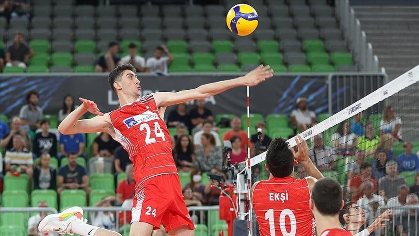
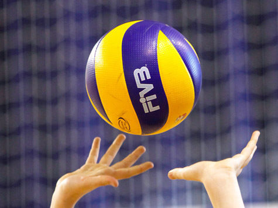

Информация о Волейболе

Волейбол — это командный спорт, который играется между двумя командами на специальном поле с сеткой посередине. Цель игры заключается в том, чтобы отправить мяч через сетку на сторону соперника так, чтобы он коснулся земли на их половине поля, и при этом предотвратить мяч от косания земли на своей половине. Волейбол является популярным видом спорта по всему миру и требует хорошей физической подготовки, координации и командной работы.
Вот основные аспекты волейбола:
Поле и сетка:
Игровое поле для волейбола имеет прямоугольную форму и размечено линиями. По центру поля располагается сетка, которая разделяет поле на две равные части.
Команды:
Волейбол играют две команды, каждая из которых состоит из шести игроков. В одной из команд игроки стоят на позициях в передней линии (атакующие) и на позициях в задней линии (защитники).
Мяч:
Мяч для волейбола обычно сделан из кожи или искусственного материала. Он относительно легкий и летает в воздухе, что требует от игроков хорошей координации.
Удары:
Волейболисты могут выполнять разнообразные удары, такие как подачи, удары с верхней передачи (бамп), атакующие удары (спайки) и другие.
Позиции:
Волейбол включает различные позиции, включая нападающих, защитников, подавающих, а также специалистов в блокировке и приеме мяча.
Блокировка:
Одной из важных частей волейбола является блокировка — попытка предотвратить мяч от пересечения сетки на стороне соперника. Блокировка выполняется путем подпрыгивания и поднимания рук на уровне сетки.
Подачи:
Подачи начинают игру и происходят из задней линии поля. Подачи могут быть различными по скорости и направлению.
Счет:
Команда получает очко, если соперник не смог вернуть мяч через сетку на половину поля команды. Матч состоит из набора партий, и выигрывает команда, набравшая больше очков в каждой партии.
Тактика и командная работа:
Волейбол требует хорошей командной работы, так как игроки должны взаимодействовать для успешных ударов, блокировок и защиты.
Профессиональные лиги:
Волейбол пользуется популярностью и имеет разнообразные профессиональные и любительские лиги в разных странах.
Волейбол — это энергичный и динамичный вид спорта, требующий от игроков хорошей физической формы, ловкости и быстрой реакции. Взаимодействие в команде и стратегическое мышление также имеют важное значение для успешной игры.
советы

Стать волейболистом требует усердной работы, тренировок и преданности. Вот некоторые шаги, которые помогут вам начать свой путь к становлению волейболистом:
Изучение игры:
Познакомьтесь с правилами волейбола, основными техниками и стратегиями игры. Ознакомьтесь с видеоуроками, книгами и другими ресурсами, чтобы понимать основы.
Обучение у тренера:
Наймите опытного тренера, который поможет вам развить технические навыки, такие как подачи, удары, передачи, блокировки и другие.
Тренировки:
Уделяйте много времени тренировкам. Разрабатывайте навыки ударов, передачи мяча, подачи и другие аспекты игры.
Физическая подготовка:
Волейбол требует хорошей физической формы. Работайте над выносливостью, силой, гибкостью и скоростью.
Самосовершенствование:
Анализируйте свои игры и тренировки. Работайте над устранением слабых сторон и постоянно стремитесь к улучшению.
Участие в команде:
Присоединитесь к местной волейбольной команде или лиге. Игра в команде поможет вам развивать сотрудничество, понимание тактики и получать игровой опыт.
Позиции:
Разберитесь, на какой позиции вы хотите играть: нападающий, защитник, подавающий и т.д. Каждая позиция требует своих навыков и задач.
Тактика и стратегия:
Освойте основы тактики волейбола. Понимание, как правильно располагаться на поле, взаимодействовать с партнерами и адаптироваться к игровым ситуациям, очень важно.
Участие в соревнованиях:
Принимайте участие в местных турнирах и лигах, чтобы получить игровой опыт и оценить свой прогресс.
Профессиональные возможности:
Если ваша цель — стать профессиональным волейболистом, исследуйте возможности вступить в юношеские академии или программы развития, которые предоставляют дополнительное обучение и игровой опыт.
Постоянство и упорство:
Путь к успеху требует времени и усилий. Будьте готовы сталкиваться с трудностями, но не теряйте мотивацию и продолжайте работать над собой.
Образ жизни:
Заботьтесь о своем здоровье, питании и сне. Правильный образ жизни поможет вам быть в хорошей физической и психологической форме.
Обучение и опыт:
Продолжайте учиться и совершенствоваться в своей игре. Участие в тренировочных лагерях, мастер-классах и обучающих сессиях также может значительно повысить ваш уровень.
Общение с опытными игроками:
Общение с волейболистами, имеющими опыт и достижения, может предоставить вам ценные советы и наставничество.
Помните, что развитие навыков и достижение успеха в волейболе — это долгосрочный процесс. Наслаждайтесь игрой, учебой и стремитесь стать лучше с каждой тренировкой и игрой.